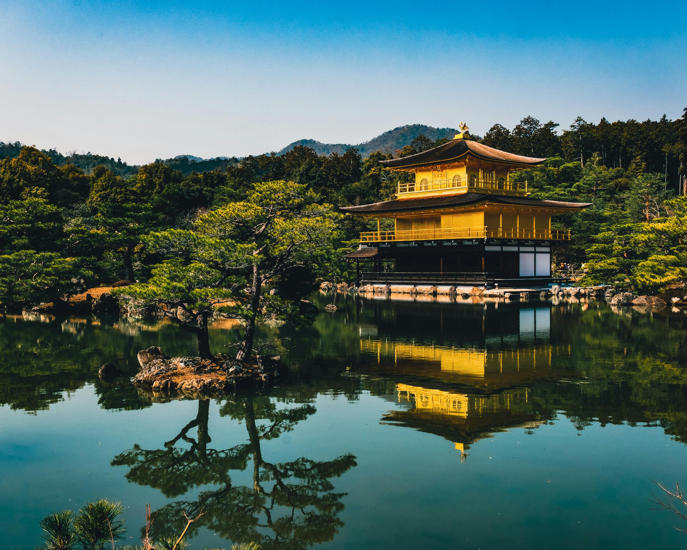
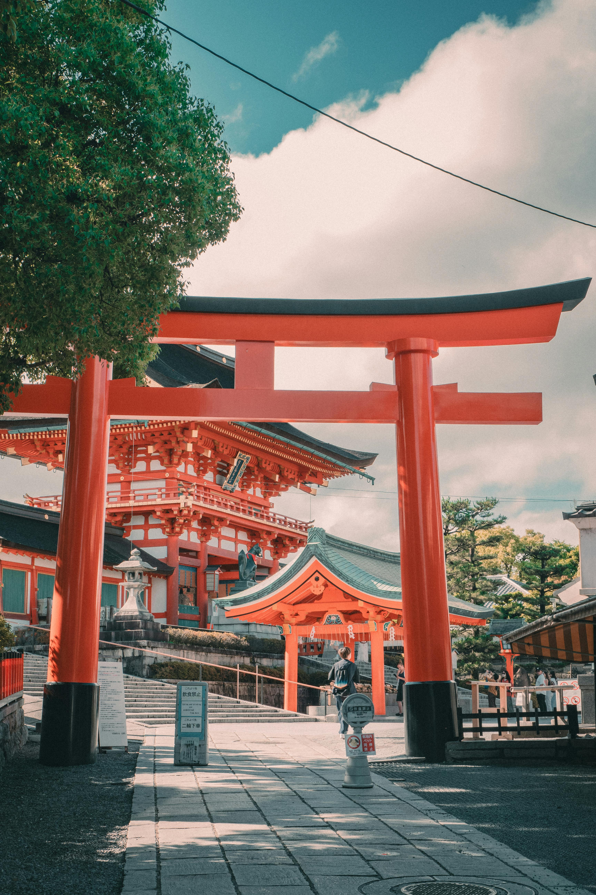
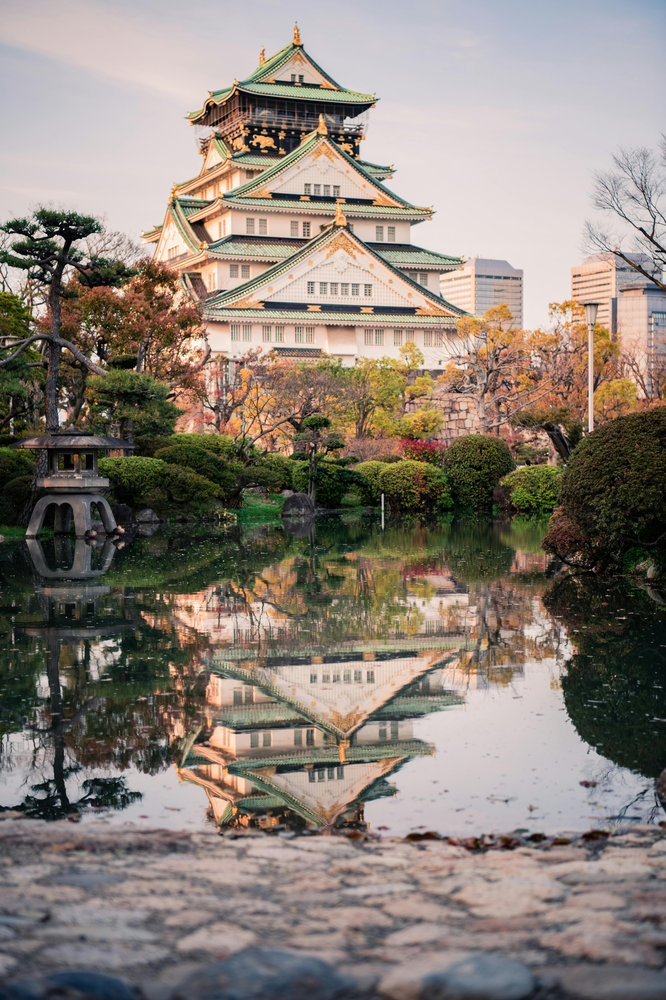

Japan is an island nation Located In East Asia |
Welcome To |
|
|
Japan, A Land Where Ancient Traditions Harmoniously Blend With Cutting-Edge Innovation, Offers A Captivating Experience Unlike Any Other. Known For Its Cultural Treasures, Stunning Natural Landscapes, And Unparalleled Hospitality, Japan Is A Destination That Truly Has Something For Everyone. From The Tranquil Beauty Of Cherry Blossoms In Spring To The Vibrant Colors Of Autumn, The Country's Changing Seasons Provide An Ever-Evolving Canvas Of Breathtaking Scenery. The Majestic Mount Fuji Stands Tall As A Symbol Of National Pride, While The Bustling Metropolis Of Tokyo Dazzles With Its Neon-Lit Skyscrapers, World-Class Shopping, And An Array Of Culinary Delights That Challenge The Boundaries Of Taste And Presentation. |
|
Categories
Here are lots of interesting destinations to visit,
but don't be
confused—they're already
grouped by category.

Tokyo Tower |

Kinkaku-ji Golden Pavilion |

Fushimi Inari Taisha |

Osaka Castle |

Nara Park |
Universal Studios |
|
Historical Of Japan From Ancient Time To Modern Power The first human inhabitants of the Japanese archipelago have been traced to the Paleolithic, around 38–39,000 years ago.[1] The Jōmon period, named after its cord-marked pottery, was followed by the Yayoi period in the first millennium BC when new inventions were introduced from Asia. During this period, the first known written reference to Japan was recorded in the Chinese Book of Han in the first century AD. Around the 3rd century BC, the Yayoi people from the continent immigrated to the Japanese archipelago and introduced iron technology and agricultural civilization.[2] Because they had an agricultural civilization, the population of the Yayoi began to grow rapidly and ultimately overwhelmed the Jōmon people, natives of the Japanese archipelago who were hunter-gatherers.[3] Between the fourth and ninth centuries, Japan's many kingdoms and tribes gradually came to be unified under a centralized government, nominally controlled by the Emperor of Japan. The imperial dynasty established at this time continues to this day, albeit in an almost entirely ceremonial role. In 794, a new imperial capital was established at Heian-kyō (modern Kyoto), marking the beginning of the Heian period, which lasted until 1185. The Heian period is considered a golden age of classical Japanese culture. Japanese religious life from this time and onwards was a mix of native Shinto practices and Buddhism. |

|
Point Of Details |
| Category | Details | |
|---|---|---|
| Value | Additional Information | |
| Official Name | Nibon Koku (庭所有) or nipp koku whic mann""asd dasd" | |
| Capital | Tokiy | (asdadadas),Colombo(asdadasd) |
| Area | Approximately 333,333 Squarr Lio meter | (22,222 sq miles) |
| Population | Arroun 111 milon peoeple(as 2023) | (2023 etimate) |
| Languages | Japane | link (lagiage) |
| Currency | Japanes Yen($JPY) | (link languse) |
| Climate |
Varied elikmate Japan exprericance fore distiact seasons
|
|
| Major Religon | Shi tom newbsdkfbf | (25,1516 sq miles) |
| Inipendance date | Japan does nasc asdd ascasca asca sdds | (2023 ewrwef) |
| Goverment tyoe | csdssc sdcscscsc scscscs scscsc sdcsc sc | (link languagee) |
| Major Industries | Atumobile,electric,Robotic,Tourism | (22,2222 sq miles) |
| UNESCO World Herddsf Stites | Japn has 22 UNISCO world sdscc scdscsdc | (2023 elimsmsdf) |
| Natural Resorses | 65,222 sq KM | (Link languagee) |
| Cutral Festival | Approximately , 22 milons | (25,2222 sq miles) |
 |
Touarisam And The tourism industry, one of the key industries driving the Japanese economy, is growing rapidly as the number of foreign visitors and inbound consumption increases. While its abundant tourism resources are attracting worldwide attention, labor shortages are an issue, and thus foreign companies are expected to enter the industry. The government is supporting the tourism industry by attracting tourists to regional areas to revitalize regional economies and improve productivity through the introduction of tourism digital transformation (DX). The three government initiatives are introduced below: |
Geography And Biodiversity |
Cultural Heritage |
Cultural Heritage |
|
Japan is a constitutional monarchy with a bicameral legislature, the National Diet. A great power and the only Asian member of the G7, Japan has constitutionally renounced its right to declare war, but maintains one of the world's strongest militaries. A highly developed country with one of the world's largest economies, Japan is a global leader in science and technology and the automotive, robotics, and electronics industries. It has one of the world's highest life expectancies, though it is undergoing a population decline. Japan's culture is well known around the world, including its art, cuisine, film, music, and popular culture, which includes prominent comics, animation, and video game industries |
During the 17th century, a third of the world’s silver was produced in the small town of Omori. The mines were closed down in the 1920s but the surrounding area, dubbed “Iwami Ginzan Silver Mine and its Cultural Landscape” was registered with UNESCO in 2007. Take a relaxing stroll down Omori street past merchant houses from the 1500s that have been converted into cozy cafes. Visiting the perfectly preserved streets and narrow pathway of Ryugenji Mabu Mineshaft will transport you back to Japan’s bygone era of simpler times.You’ve definitely seen the red torii gate of Itsukushima Shrine floating angelically on the ocean if you’ve ever Googled images of Japan. The shrine is located on the tiny island of Miyajima, a 10-minute ferry ride away from the mainland of southern Hiroshima Prefecture. Snap a perfect picture of the grand torii at high tide when it appears to be floating, or walk right up and touch it during low tide. With its hypnotic otherworldly atmosphere at dusk, it’s no wonder the gate is considered the pathway between the human and spirit realm. |
The theme of nature is predominant throughout these sites. Visit the Ogasawara Islands with their unique ecosystems; the Iwami Ginzan Silver Mine set deep into the mountains, or the sacred sites and pilgrimage routes that snake through the Kii Mountain Range in western Japan. If you are looking for somewhere slightly more accessible—yet no less captivating—take a trip to the floating shrine of Itsukushima in Hiroshima Prefecture, the original castle of Himeji-jo in Hyogo Prefecture, or the steep thatched roofs of the Historic Villages of Shirakawa-go and Gokayama. The skeletal structure of the Hiroshima Peace Memorial stands as a symbol of peace as well as a stark reminder of an act of atrocity, and towering above them all is the most iconic site that has been a source of inspiration for culture is well known around the world, including its art, cuisine, film, music, and popular culture, which includes prominent comics, animation, and video game industries Mount Fuji is the unquestionable symbol of Japan whether you’re brave enough to try climbing the 3,776-meter tall mountain, or just lucky enough to catch a glimpse of it while riding the bullet train. The most scenic vantage points to admire the snow-capped mountain from afar are Lake Kawaguchi or the Chureito Pagoda in Yamanashi Prefecture. |